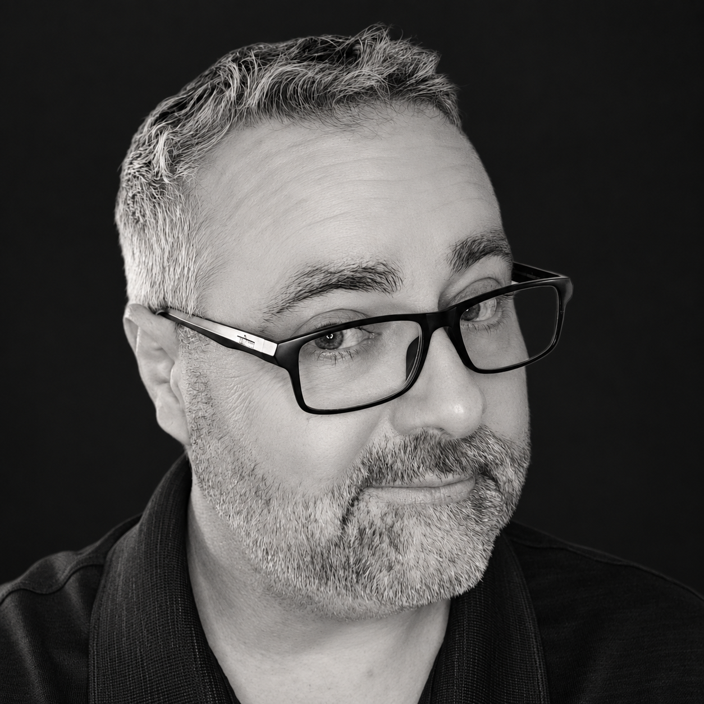

Integrative Esthetics
Bringing skin health, client education, and whole-person wellness together. Currently completing the 600-hour Esthetics Program at Aveda Institute Maryland, anticipated October 2026.
L.Ac. | CPT | IBCO
Acupuncture • Integrative Esthetics • Community Health • International Anti-Doping

01 / About
My work connects clinical care, aesthetics, public health, and sport integrity. Across each setting, I bring a client-centered approach grounded in careful technique, education, safety, and respect for the individual.
02 / Areas of Practice
Bringing skin health, client education, and whole-person wellness together. Currently completing the 600-hour Esthetics Program at Aveda Institute Maryland, anticipated October 2026.
Maryland Licensed Acupuncturist with experience across traditional and contemporary approaches, including cosmetic acupuncture, gua sha, cupping, moxibustion, tuina, and mobile wellness care.
International Blood Collection Officer with experience supporting athlete testing and clean-sport operations in international cycling and other sport environments.
Experience in prevention education, health outreach, phlebotomy, and community-based service. Community Health Worker certification anticipated October 2026.
03 / Selected Experience
Amplified Acupuncture Wellness LLC
Independent contractor supporting international testing and UCI cycling events.
Queen Anne’s County Public Schools
04 / Education & Credentials
05 / Connect
For professional opportunities, collaborations, and inquiries.
Add your preferred email, LinkedIn, Instagram, and résumé link here before publishing.